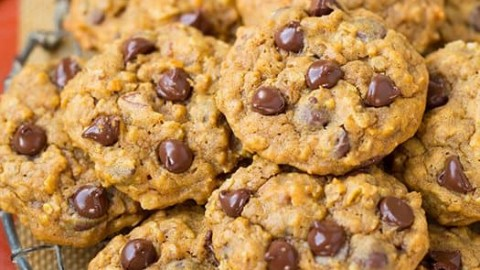

Betty Crocker's Famous Oatmeal Chocolate Chip Cookies

Ingredients
- 1 1/2 cups brown sugar, packed
- 1 cup butter, softened
- 1 teaspoon vanilla
- 1 egg
- 2 cups fast-cooking oats
- 1 1/2 cups flour
- 1 teaspoon baking soda
- 1/4 teaspoon salt
- 1 cup (6 oz) semisweet chocolate chips
Directions
- Heat oven to 350o F. In large bowl, stir brown sugar and butter until blended. Stir in vanilla and egg until light and fluffy. Stir in oats, flour, baking soda and salt; stir in chocolate chips and nuts.
- Onto ungreased cookie sheet, drop dough by rounded tablespoonfuls about 2 inches apart.
- Bake 10 to 12 minutes or until golden brown. Allow cookies to cool for about 2 to 3 minutes. Dunk in milk for extra enjoyment.
View the original recipe here
Contact Me
Send me an email!
University of Montana
32 Campus Drive
Missoula, MT 59812